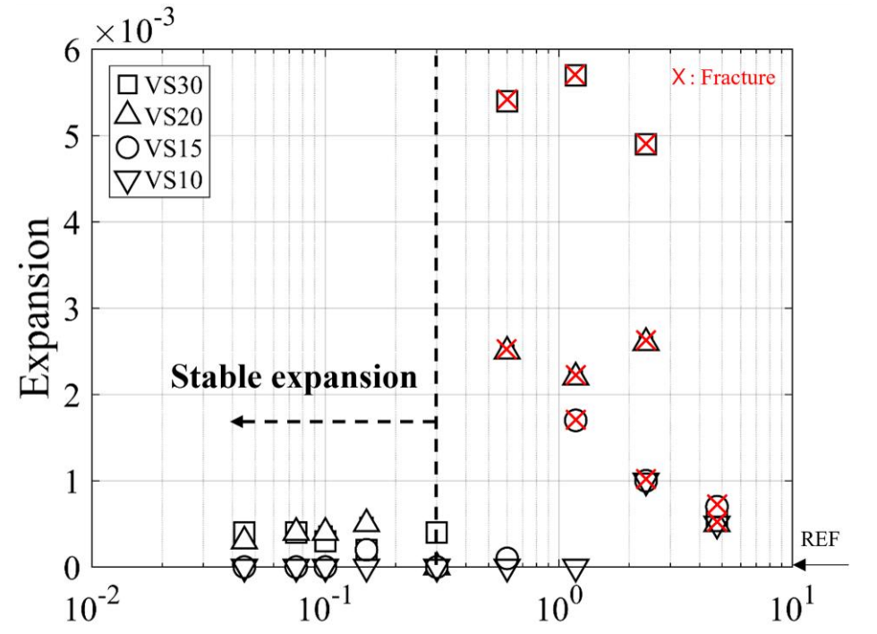
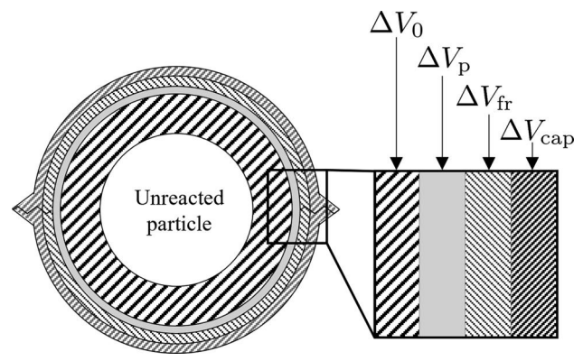
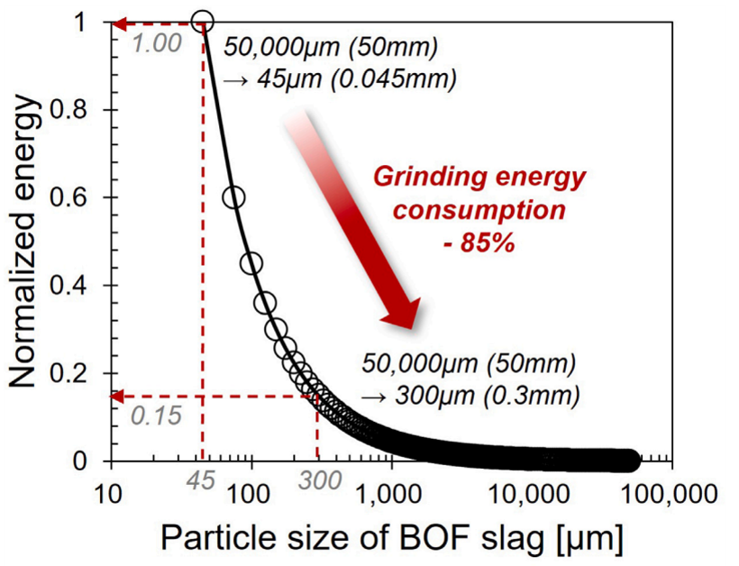

BOF 슬래그는 어느 정도까지 분쇄해야 콘크리트에 안전하게 사용할 수 있을까?
입자크기에 따른 팽창과 균열, 그리고 분쇄에너지
BOF 슬래그, 전로슬래그, 제강슬래그, BOF slag, 콘크리트, 시멘트계 재료, 슬래그 입자크기, 슬래그 입도, 유리 CaO, free CaO, 슬래그 팽창, 팽창 균열, 임계 입자크기, 슬래그 분쇄, 분쇄에너지, 산업부산물, 지속가능 건설재료
활용 가능성은 큰데, 왜 문제가 되는가?
제강 과정에서는 많은 양의 전로슬래그(Basic Oxygen Furnace slag, BOF slag)가 발생한다. 건설재료로 활용할 가능성도 상당히 크다.
문제는 하나다.
BOF 슬래그에는 유리 산화칼슘(free CaO)이 포함되어 있다. 유리 CaO가 물과 반응하면 수산화칼슘이 생성된다.
\[ \mathrm{CaO + H_2O \rightarrow Ca(OH)_2}. \]
이 반응에서는 고체의 체적이 상당히 증가한다.
굳은 시멘트계 재료 내부에서 이런 반응이 일어나면 반응생성물이 내부 압력을 만들고, 미세균열과 팝아웃(pop-out)을 거쳐 결국 눈에 보이는 균열이나 파괴로 이어질 수 있다.
이러한 체적 불안정성은 BOF 슬래그를 시멘트계 재료에 널리 활용하는 데 가장 큰 걸림돌 중 하나였다.
얼핏 보면 해결책은 간단하다.
슬래그를 아주 곱게 갈면 되지 않을까?
실제로 미세하게 분쇄한 제강슬래그는 시멘트계 재료에 성공적으로 사용되어 왔다. 하지만 BOF 슬래그는 잘 갈리지 않는다. 목표 입자크기가 작아질수록 필요한 분쇄에너지도 빠르게 증가한다.
그래서 공학적으로 더 중요한 질문은 이것이다.
BOF 슬래그는 실제로 어느 정도까지 잘게 분쇄해야 하는가?
이 질문의 답을 따라가다 보면 화학반응, 물질이동, 역학, 파괴가 서로 어떻게 연결되는지가 보인다.
입자크기가 달라지면 팽창의 양상 자체가 달라진다
본 연구진의 실험에서 수 mm 크기의 입자부터 45 \(\mu\)m보다 작은 입자까지 넓은 범위의 제강슬래그를 조사하였다.
결과는 단순히 입자가 클수록 팽창도 비례해서 커지는 형태가 아니었다.
대신 입자크기에 따라 손상이 급격하게 달라지는 임계값이 나타났다.
작은 입자에서는 대체로 팽창이 제한적이었고 시험체도 건전한 상태를 유지했다.
하지만 일정한 입자크기를 넘으면 거동 자체가 달라졌다. 팽창이 급격히 증가하고 균열이나 완전한 파괴까지 발생할 수 있었다.
실험 및 모델링 연구에서, 주어진 촉진양생 조건 아래 급격한 팽창과 파괴가 관찰된 임계 입자크기는 대략 다음과 같았다.
- 슬래그 함량 10%: 2.36 mm
- 15%: 1.2 mm
- 20%: 0.6 mm
- 30%: 0.6 mm
즉 임계값은 입자크기만의 문제가 아니다. 재료 안에 슬래그가 얼마나 들어 있는가에도 영향을 받는다. :contentReferenceoaicite:2

그림에서 중요한 것은 변화가 점진적이지 않다는 점이다.
어떤 입자크기 이하에서는 팽창이 작고 안정적이다. 그러나 배합에 따라 결정되는 임계 입자크기를 넘으면 거동이 질적으로 달라진다. 팽창이 갑자기 증가하고 파괴가 동반될 수도 있다.
따라서 입자크기는 단순히 반응속도를 조절하는 부차적인 변수가 아니다.
화학반응으로 발생한 팽창을 주변 시멘트계 재료가 받아낼 수 있는지 여부를 결정하는 중요한 역학적 변수다.
왜 입자크기가 그렇게 중요한가?
문제의 화학적 원인은 유리 CaO이다. 하지만 화학만으로는 실험에서 나타난 입자크기 효과를 설명할 수 없다.
굳은 시멘트 페이스트 안에 슬래그 입자 하나가 들어 있다고 생각해 보자.
물이 입자에 도달하면 수화반응이 시작된다. 반응은 입자 표면에서 시작되고 반응전선(reaction front)이 점차 내부로 이동한다.
입자가 충분히 작다면 비교적 짧은 시간에도 입자의 상당 부분이 반응할 수 있다. 이때 생성된 반응생성물은 주변 시멘트계 재료의 공극이나 슬래그 자체의 다공성 영역에 어느 정도 수용될 수 있다.
따라서 팽창도 공간적으로 분산된다.
큰 입자에서는 상황이 달라진다.
반응이 진행되어도 상당한 크기의 미반응 코어가 남아 있는 상태에서 입자 주변에 반응생성물이 쌓인다. 주변의 빈 공간으로 더 이상 이를 받아낼 수 없게 되면 내부 압력이 발생한다.
이를 순서대로 쓰면 다음과 같다.
\[ \text{유리 CaO의 수화} \rightarrow \text{반응생성물} \rightarrow \text{구속} \rightarrow \text{내부 압력} \rightarrow \text{미세균열}. \]
결국 입자크기는 단순히 반응할 CaO의 양만 바꾸는 것이 아니다.
화학반응이 주변 재료와 역학적으로 상호작용하는 방식 자체를 바꾼다.
모델링 연구에서는 이를 반응전선의 진행, 이용 가능한 공극체적, 내부 압력, 파괴의 상호작용으로 설명하였다. :contentReferenceoaicite:3
화학반응이 어떻게 파괴로 이어지는가?
이 메커니즘을 정량적으로 이해하기 위해 단순화한 물리 기반 모델을 개발하였다.
시멘트계 재료를 여러 개의 미소 셀(microcell)로 이상화하고, 각 셀 안에는 굳은 시멘트계 재료로 둘러싸인 슬래그 입자가 하나씩 있다고 생각한다.
반응이 진행되면 화학반응으로 새롭게 생긴 체적은 어디엔가 수용되어야 한다.
개념적으로 체적 적합조건은 다음과 같이 쓸 수 있다.
\[ \Delta V_{\mathrm{che}} = \Delta V_0 + \Delta V_p + \Delta V_{\mathrm{fr}} + \Delta V_{\mathrm{cap}}, \]
여기서
- \(\Delta V_{\mathrm{che}}\)는 화학반응으로 생성되는 체적,
- \(\Delta V_0\)는 반응한 재료의 원래 체적,
- \(\Delta V_p\)는 압축변형에 해당하는 체적,
- \(\Delta V_{\mathrm{fr}}\)는 미세파괴에 의해 생기는 체적,
- \(\Delta V_{\mathrm{cap}}\)는 기존 공극에 수용되는 반응생성물의 체적이다.

이 그림이 모델의 역학적 핵심을 보여준다.
화학반응으로 고체 체적이 증가한다고 해서 그 증가분이 모두 곧바로 거시적인 팽창으로 나타나는 것은 아니다.
일부는 주변 공극에 들어갈 수 있고, 일부는 압축변형으로 받아낼 수 있으며, 일부는 균열을 만들면서 수용된다.
공극체적이 충분하다면
\[ \Delta V_{\mathrm{cap}} \]
가 반응생성물의 상당 부분을 받아주기 때문에 거시적인 손상은 거의 발생하지 않는다.
반대로 그 수용능력을 다 써버리면 남은 반응체적은 점점 더 변형과 파괴를 통해서만 수용될 수 있다.
결국 화학반응 문제는 체적 적합 문제가 되고, 마지막에는 파괴역학 문제가 된다. :contentReferenceoaicite:4
반응전선을 보면 입자크기 효과가 이해된다
입자크기는 일정한 시간 동안 슬래그 입자의 어느 정도가 반응하는지도 바꾼다.
수화과정은 입자 표면에서 내부로 이동하는 반응전선으로 나타낼 수 있다.
작은 입자에서는 반응전선이 입자 전체 크기에 비해 상당히 깊게 침투한다.
큰 입자에서는 상당한 크기의 미반응 코어가 남을 수 있다.
따라서 팽창은 단순히 입자크기 하나로 정해지지 않는다. 다음 변수들이 동시에 작용한다.
\[ \text{입자크기}, \]
\[ \text{반응전선의 진행}, \]
\[ \text{유리 CaO 함량}, \]
\[ \text{슬래그 혼입률}, \]
그리고
\[ \text{이용 가능한 공극체적}. \]
균질화 모델은 서로 다른 슬래그 함량에서 안정적인 거동이 급격한 팽창으로 전환되는 현상을 비교적 잘 재현하였다.
더 중요한 것은 이 모델이 왜 임계 입자크기가 존재해야 하는지 물리적으로 설명해 준다는 점이다. :contentReferenceoaicite:5
두 번째 연구에서는 입자크기만을 보다 체계적으로 살펴보았다
후속 실험에서는 BOF 슬래그 자체에 초점을 맞추어 입자를
\[ 45~\mu\mathrm{m} \quad \text{부터} \quad 4750~\mu\mathrm{m} \]
범위를 아홉 개 입도 구간으로 나누었다.
그리고 BOF 슬래그 혼입률 10%와 20%에서 각 입도 구간을 체계적으로 시험하였다.
결과는 입자크기 효과가 매우 비선형적이라는 점을 다시 확인시켜 주었다.
굵은 입자에서는 수화반응이 국부적으로 일어나고 팽창응력도 집중되었다. 그 결과 균열, 팝아웃, 파괴가 뒤따랐다.
작은 입자는 전혀 다른 거동을 보였다. 반응이 재료 전체에 보다 고르게 분산되면서 팽창응력의 국부적인 집중도 줄어들었다.
조사한 조건에서 혼입률이 20%일 때 600 \(\mu\)m 이상의 모든 입도 구간에서 파괴가 발생했으며, 특히 600 \(\mu\)m 구간에서는 매우 심한 열화가 나타났다.
반면 입자크기를 약 300 \(\mu\)m 이하로 제어하면 팽창에 의한 균열이 크게 줄었다. :contentReferenceoaicite:6
여기서 중요한 것은 이것이다.
문제는 슬래그가 얼마나 많이 반응하느냐만이 아니다. 그 반응으로 생긴 팽창이 어디에서, 어떤 방식으로 수용되느냐가 더 중요하다.
유리 CaO가 팽창의 잠재력을 만들고, 입자크기가 손상 형태를 결정한다
두 번째 연구를 보면 화학적 역할과 역학적 역할을 좀 더 분명하게 구분할 수 있다.
각 입도 구간의 슬래그를 다시 동일한 크기로 분쇄한 뒤 유리 CaO를 측정했을 때, 원래 입자크기가 달랐음에도 유리 CaO 함량은 대체로 비슷했다.
그런데 팽창과 균열 거동은 입자크기에 따라 크게 달라졌다. :contentReferenceoaicite:7
따라서 다음과 같이 정리할 수 있다.
유리 CaO가 팽창의 잠재력을 결정한다면, 입자크기는 그 잠재력이 실제 재료 안에서 어떤 역학적 손상으로 나타나는지를 크게 좌우한다.
굵은 입자는 국부적인 팽창압력을 만들어 균열을 일으킬 수 있다.
반면 유리 CaO 함량이 비슷하더라도 작은 입자는 반응이 보다 분산되어 상대적으로 안정적인 거동을 보일 수 있다.
유리 CaO를 완전히 제거하지 않더라도 입자크기 제어가 효과적인 이유가 여기에 있다.
입자를 작게 만들면 팽창만 줄어드는 것이 아니다
입자크기를 줄이면 역학적 성능에도 변화가 있었다.
BOF 슬래그의 입자크기가 작아질수록 28일 압축강도는 증가했으며, 특히 약 300 \(\mu\)m 이하에서 뚜렷한 향상이 나타났다.
흥미로운 점은 이 크기 범위가 팽창에 의한 손상을 훨씬 쉽게 제어할 수 있게 되는 범위와 대략 일치한다는 것이다. :contentReferenceoaicite:8
따라서 입자크기를 줄이면 두 가지 효과를 동시에 얻을 수 있다.
- 팽창에 의한 균열을 줄이고,
- 압축강도를 높일 수 있다.
하지만 공짜는 아니다.
그렇다면 모두 45 μm까지 갈아버리면 되지 않을까?
입자가 작아질수록 분쇄는 점점 어려워진다.
Bond 법칙을 이용하면 필요한 분쇄에너지는 대략 다음과 같이 나타낼 수 있다.
\[ W \propto \frac{1}{\sqrt{d_p}} - \frac{1}{\sqrt{d_f}}, \]
여기서 \(d_f\)는 투입 입자의 크기이고 \(d_p\)는 최종 입자크기이다.
중요한 것은 이 관계가 선형이 아니라는 점이다.
목표 입자크기가 매우 작아질수록 필요한 에너지가 급격하게 증가한다.

이 곡선을 보면 왜 임계 입자크기가 경제적으로도 중요한지 알 수 있다.
BOF 슬래그 연구에서 사용한 Bond 법칙 추정에 따르면, 대표적인 50 mm 투입입자를 약 300 \(\mu\)m까지 줄이는 데 필요한 에너지는 45 \(\mu\)m까지 모두 분쇄하는 경우의 정규화 분쇄에너지 중 약 15%에 불과하다.
다르게 말하면 300 \(\mu\)m 부근에서 분쇄를 멈추면, 이 추정조건에서는 45 \(\mu\)m 초미분쇄에 비해 분쇄에너지 요구량을 약 85% 줄일 수 있다. :contentReferenceoaicite:9
따라서 필요 이상으로 BOF 슬래그를 미세하게 분쇄하면 팽창 억제 효과는 조금 더 얻으면서 상당한 추가 에너지를 소비할 수 있다.
공학적인 목표는
가능한 한 곱게
가 아니라,
유해한 국부 팽창을 막는 데 필요한 만큼 곱게
분쇄하는 것이다.
입자크기와 슬래그 혼입률은 함께 결정해야 한다
실험 결과에는 중요한 조건이 하나 더 있다.
적정 입자크기를 정할 때 혼입률을 빼놓을 수 없다.
BOF 슬래그 연구에서 조사한 조건을 실용적으로 해석하면 대략 다음과 같다.
| BOF 슬래그 혼입률 | 실용적인 목표 입자크기 |
|---|---|
| 약 10% | 300 \(\mu\)m 이하 |
| 20%에 가까운 경우 | 약 75 \(\mu\)m 이하 |
혼입률 10%에서는 입자크기를 약 300 \(\mu\)m 이하로 제어했을 때 거시적인 손상 없이 안정적인 거동을 보였지만, 더 높은 혼입률에서는 보다 엄격한 입도 제어가 필요했다. :contentReferenceoaicite:10
왜 슬래그 함량이 많아지면 입자를 더 작게 만들어야 할까?
혼입률이 높아지면 더 많은 슬래그 입자가 동시에 반응하고, 각 입자 주변에서 반응생성물을 받아줄 수 있는 매트릭스 체적은 상대적으로 줄어든다.
따라서 같은 크기의 입자라도 슬래그 함량이 증가하면 더 큰 손상을 일으킬 수 있다.
결국 입자크기와 혼입률은 서로 연계된 설계변수로 보아야 한다.
결국 이것은 하나의 공학적 최적화 문제다
BOF 슬래그를 실제로 활용하는 문제는 다음 세 가지 요구조건 사이에서 균형점을 찾는 문제로 볼 수 있다.
\[ \boxed{ \text{팽창 안정성} \quad+\quad \text{역학적 성능} \quad+\quad \text{분쇄 효율} } \]
너무 굵은 입자는 가공에 드는 에너지는 작지만 국부 팽창과 파괴를 일으킬 수 있다.
반대로 지나치게 작은 입자는 팽창을 효과적으로 억제하지만 훨씬 많은 분쇄에너지가 필요하다.
그 사이에 공학적으로 유용한 범위가 존재한다.
우리 연구에서 조사한 BOF 슬래그와 배합조건에서는, 중간 정도의 혼입률에서 약 300 \(\mu\)m 이하가 중요한 실용 범위로 나타났으며, 슬래그 함량이 높아지면 훨씬 더 작은 입자가 필요할 수 있었다. :contentReferenceoaicite:11
여기서 주의할 점이 있다.
300 \(\mu\)m는 보편적인 재료상수도 아니고 설계기준의 한계값도 아니다.
임계 입자크기는 다음과 같은 조건에 따라 달라질 수 있다.
- 유리 CaO 함량
- 슬래그 혼입률
- 배합설계
- 매트릭스의 공극률
- 양생온도
- 수분조건
- 그 밖의 재료 특성
또한 이 연구의 실험은 정해진 촉진양생 조건에서 수행되었다. 따라서 여기서 확인한 임계값도 그 조건 안에서 이해해야 한다. :contentReferenceoaicite:12 :contentReferenceoaicite:13
조금 더 넓게 보면, 이것은 재료역학의 문제이기도 하다
이 문제는 공학재료에서 자주 나타나는 보다 일반적인 원리를 보여준다.
화학반응이 일어났다는 사실만으로 구조적 손상이 결정되는 것은 아니다.
반응으로 발생한 변형이 다음 요소들과 상호작용할 때 손상이 발생한다.
- 형상
- 구속
- 물질이동
- 이용 가능한 공극
- 재료의 강성
- 파괴저항
따라서 BOF 슬래그의 팽창은 단순한 재료화학 문제가 아니다.
화학-역학 연성(chemo-mechanical) 문제다.
이렇게 보면 공학적인 질문도 달라진다.
“어떻게 하면 이 반응을 없앨 수 있을까?”
보다는
“이 반응과 그에 따른 역학적 결과를 어떻게 제어할 수 있을까?”
가 더 실용적인 질문이 된다.
이 차이가 산업부산물을 실제 건설재료로 활용할 수 있는 새로운 길을 만든다.
실제로 무엇이 달라지는가?
이 연구의 핵심 메시지는 간단하다.
BOF 슬래그를 시멘트계 재료에 사용하기 위해 반드시 초미분말 수준까지 분쇄할 필요는 없다.
대신 팽창성 반응생성물이 해로운 응력집중을 만들지 않고 수용될 수 있도록 입자크기를 설계할 수 있다.
조사한 조건에서는 중간 정도의 혼입률에서 약 300 \(\mu\)m가 중요한 실용적 크기로 나타났고, 슬래그 함량이 높아질수록 보다 엄격한 입도 제어가 필요했다.
이 접근은 팽창 안정성과 유용한 역학적 성능을 유지하면서 BOF 슬래그의 분쇄에너지를 줄일 수 있는 방법을 제공한다.
결국 핵심은 이것이다.
BOF 슬래그를 가능한 한 곱게 갈 필요는 없다. 필요한 만큼만 갈면 된다.
Further reading
이 글은 다음 연구의 결과를 공학적 관점에서 설명한 것이다.
Seo, S., Lee, O., Lee, Y., Zhu, X., & Zi, G. (2026).
Particle-size dependent expansion of cement composites incorporating steel slag.
Journal of Sustainable Cement-Based Materials, 15(6), 2001–2014.
DOI: 10.1080/21650373.2026.2625184
Lee, Y., Seo, S., Yi, C., Lee, S.-H., & Zi, G. (2026).
Governing role of particle size in expansion of cement composites incorporating basic oxygen furnace slag.
Case Studies in Construction Materials, 25, e06428.
DOI: 10.1016/j.cscm.2026.e06428